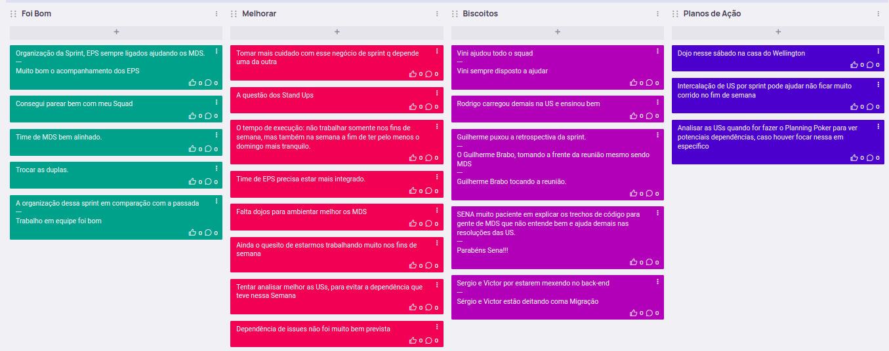

Sprint 2
Visão geral
Data de Inicio: 23/05/2023
Data de Término: 30/05/2023
Atividades realizadas
Reunião dia 23/05/2023
Participantes
| Papel | Membro |
|---|---|
| EPS | Arthur Sena, Peniel Zannoukou, Rodrigo Lima, Victor Lucas, Vinícius Souza, Wellington Jonathan |
| MDS | Ana Cavalcanti, Artur Fontinele, Flávio Melo, Guilherme Gonçalves, Gustavo Sorte, Harryson Martins, Juan Pablo Ricarte, Leandro Oliveira, Oscar Neto, Yan Paulo |
- Assuntos abordados:
- Novos rituais propostos
- Reunião com o Cliente toda Segunda às 20h
- Ouvir os comentários do Cliente sobre o que foi trabalhado na Sprint
- Refinamento toda Segunda após a reunião com o Cliente
- Com o que foi falado pelo Cliente, já pensar em novas soluções
- Sprint Review + Planning toda Terça às 20h
- Duração de 40 minutos
- Planejar o que será feito na Sprint, separar as USs
- Retrospectiva toda Terça após a Review + Planning
- Comentários do que foi bom e o que foi ruim no decorrer da Sprint
- Daily nos dias seguintes às 20h
- Para saber se está fluindo, se está travado, o que vai fazer para andar, etc
- Além de fazer Stand Ups durante o intervalo entre as aulas de EPS e MDS
- Caso não consiga participar, mandar os relatórios por texto no canal de comunicação
- Reuniões de Team Build
- Reuniões casuais para o time conversar fora de um âmbito acadêmico, com a intenção de melhorar o entrosamento do time como um todo
- Reunião com o Cliente toda Segunda às 20h
- Sprint Review
- Foi feito e usado como base para o planejamento da próxima Sprint
- Sprint Planning
- USs para Sprint
- Foi feito uma rotação nos times de pareamento
- US06 (Status do Processo)
- Leandro, Oscar, Yan, Harryson, Peniel, Rodrigo
- US35 (Fim de Processo)
- Guilherme, Artur e Vinicius
- US37 (Visualização de Etapas por Unidade)
- Gustavo, Ana e Wellington
- US38 (Visualização de Processos por Unidade)
- Flávio, Juan e Sena
- Sergio e Victor serão responsáveis por um dojo de BackEnd
- USs para Sprint
- Retrospectiva
- Foi usado o EasyRetro
- Foi bom
- De fato conseguimos entregar as USs planejadas para a Release 1
- MDSs bem presentes nos processos de desenvolvimento, melhorando o andamento do time, como um time de fato
- Melhorar
- Tentar não rushar as sprints
- Organização de mais horários para o time se reunir
- Enquanto estiver precisando de Dojos, eles podem ser feitos
- Planos de Ações
- Melhorar rotinas de Planejamento
- Manter dojos novos quando necessários
- Manter comunicações diárias
- Definir rotinas de Validação com o Cliente
- Mandar os protótipos da próxima Sprint na Quarta ou Quinta
- Mandar para o Teste de Aceitação, assim que a US ficar pronta, não precisando esperar para o Cliente validar todas as USs para a Release Major, e sim fazer Releases Minor assim que fechar um PR
- Validações feitas pelo GitHub
- Foi bom
- Foi usado o EasyRetro
- Novos rituais propostos
Redator: Guilherme de Sá Gonçalves
Reunião dia 29/05/2023
Participantes
| Papel | Membro |
|---|---|
| Professor | Hilmer Rodrigues Neri |
| Cliente | Wellington José Barbosa Carlos |
| Mentor | Fernando Miranda |
| Monitores | Ana Luiza, Chaydson Ferreira, Pedro Carvalho |
| EPS | Arthur Sena, Peniel Zannoukou, Rodrigo Lima, Sérgio Cipriano, Victor Lucas, Vinícius Souza, Wellington Jonathan |
| MDS | Ana Cavalcanti, Artur Fontinele, Flávio Melo, Guilherme Gonçalves, Gustavo Sorte, Harryson Martins, Juan Pablo Ricarte, Leandro Oliveira, Oscar Neto, Yan Paulo |
- Assuntos abordados:
- RoadMap
- Release 2, Etapas e Desempenho
- Iniciar um processo, finalizar um processo, arquivamento do processo, visualização da etapa no fluxo, nome de etapas iguais
- O que já foi feio na Sprint
- US06 - Status do Processo
- US37 - Gerenciamento de Processos
- US38 - Gerenciamento de Etapas
- Porém ainda não foi mandado para validação, por problemas pontuais, como problema com o ambiente, banco de dados, etc
- Cliente pediu para que se possível, alguém do time sempre o acompanhar na hora da validação para tirar uma dúvida na hora e assim acelerar o processo de validação
- O cliente marcaria um horário e mandaria um link, para quem estiver disponível entrar
- O que está sendo revisado
- US35 - Finalizar processo
- US34 - Início do processo
- As etapas de Início e Fim são definidas pela sequência delas quando foi criado o fluxo, o Cliente achou perfeito
- O que será trabalhado a seguir
- US03 - Retrocesso de Etapas
- US04 - Adição de Etapas com nomes iguais
- US05 - Visualização da duração de etapas
- US07 - Registro de data por etapa
- Fora isso, o trabalho nos requisitos não funcionais foi continuado durante a Sprint
- A refatoração dos Micro Serviços está com previsão de ser finalizado até o dia 04/06
- Release 2, Etapas e Desempenho
- Regra de Negócio para Processos
- O Processo não pode aparecer em mais de uma unidade, porém o Processo pode estar dentro de mais de um Fluxo, porém na mesma Unidade.
- Os Status do Processo é por Fluxo, em um determinado fluxo, um processo pode estar “arquivado”, mas em outro fluxo, “finalizado”
- O Registro deixará de ser uma chave única, para ser possível colocar um mesmo processo em fluxos diferentes
- RoadMap
Redator: Guilherme de Sá Gonçalves
Reunião dia 29/05/2023
Participantes
| Papel | Membro |
|---|---|
| EPS | Arthur Sena, Peniel Zannoukou, Rodrigo Lima, Sérgio Cipriano, Victor Lucas, Vinícius Souza, Wellington Jonathan |
| MDS | Ana Cavalcanti, Artur Fontinele, Flávio Melo, Guilherme Gonçalves, Leandro Oliveira |
- Assuntos abordados:
- Remodelação da relação dos Processos
- De acordo com o que foi dito, agora um Processo pode ter vários Fluxos
diferentes
- No Front, em vez de puxar da tabela de “Process”, passar a chamar da “FlowProcess”
- No Banco/Backend, a criação do Processo, deve permitir mesmo “record”, mas fluxos diferentes
- De acordo com o que foi dito, agora um Processo pode ter vários Fluxos
diferentes
- Priorizar terminar as issues, porém trabalhando na refatoração dessa parte
- Remodelação da relação dos Processos
Redator: Guilherme de Sá Gonçalves
Issues Concluidas
| Issue | Responsáveis(s) |
|---|---|
| Finalizar migração do frontend | Arthur Sena, Victor Lucas |
| Criar serviço de usuário | Victor Lucas |
| E01 - Usabilidade | Arthur Sena, Wellington Jonathan |
| US01 - Experiencia com a plataforma | Arthur Sena, Victor Lucas, Wellington Jonathan |
| US02 - Informações de acesso | Arthur Sena, Peniel Zannoukou, Victor Lucas, Wellington Jonathan |
| E03 - Unidade | Arthur Sena, Wellington Jonathan |
| US08 - Controle de unidades | Ana Cavalcanti, Arthur Sena, Guilherme Gonçalves, Gustavo Sorte, Juan Pablo Ricarte, Vinícius Souza, Wellington Jonathan |
| US09 - Gerencionamento de diretores | Arthur Sena, Guilherme Gonçalves, Wellington Jonathan |
| US10 - Gerenciamento de fluxos | Arthur Sena, Rodrigo Lima, Wellington Jonathan |
| Refatoração do Frontend | Arthur Sena, Sérgio Cipriano, Victor Lucas |
| Construir Protótipo da US03 | Arthur Sena, Victor Lucas, Wellington Jonathan |
| Construir Protótipo US05 | Arthur Sena, Flávio Melo, Juan Pablo Ricarte, Vinícius Souza, Wellington Jonathan |
| Construir Protótipo US06 | Arthur Sena, Artur Fontinele, Harryson Martins, Leandro Oliveira, Oscar Neto |
| Construir Protótipo US07 | Ana Cavalcanti, Arthur Sena, Guilherme Gonçalves, Gustavo Sorte |
| Cadastro na plataforma permite e-mail duplicado | Arthur Sena |
| Mensagem de erro ao tentar realizar cadastro com CPF já cadastrado | Arthur Sena |
| Ações numa tabela da aba de cadastro não atualizam a outra | Arthur Sena |
| Ações com erro estão com loading infinito | Arthur Sena |
| Usuário administrador não deve ser associado a nenhuma unidade | Arthur Sena |
| Usuário administrador não deve ver abas de etapas, fluxos e processos | Arthur Sena |
| Ícone de lixeira na tabela de solicitações está errado | Arthur Sena |
| Melhorias nas ações já existentes da plataforma | Arthur Sena |
| Solicitação de cadastro consta com a unidade errada | Arthur Sena |
| Alterar função que retorna de listagem de etapas para retornar apenas as da unidade do usuário | Ana Cavalcanti, Artur Fontinele, Gustavo Sorte, Vinícius Souza, Wellington Jonathan |
| BUG - Visualizar Processo no Fluxo | Arthur Sena, Artur Fontinele, Guilherme Gonçalves, Vinícius Souza, Wellington Jonathan |
Retrospectiva

Histórico de versão
| Data | Versão | Descrição | Autor(es) |
|---|---|---|---|
| 25/05/2023 | 0.1.0 | Criação do Documento | Ana Cavalcanti e Guilherme Gonçalves |
| 31/05/2023 | 0.1.1 | Atualização do Documento | Ana Cavalcanti e Guilherme Gonçalves |
| 21/06/2023 | 0.1.2 | Atualização do Documento | Ana Cavalcanti e Guilherme Gonçalves |